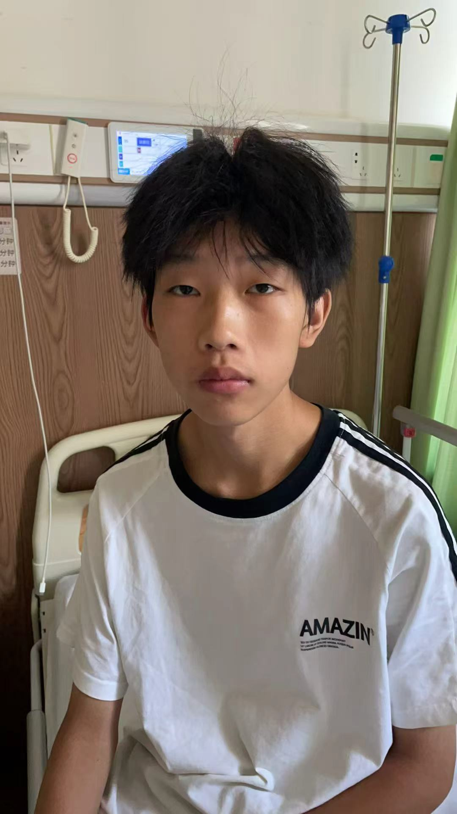

Xiao Tu
Basic Information
| Birth Year | 2009 |
| Gender | Male |
| Origin | Sichuan Province |
| Diagnosis | Ventricular Septal Defect (VSD) |
Medical Information
| Hospital | Shanghai Yida Hospital |
| Surgery Date | August 25, 2025 |
| Status | Surgery Completed |
Donation Summary
June 11, 2025 · YK Pao School Parent Donation
¥30,000
Total Raised
¥30,000
Story
Xiao Tu, born in 2009 in Sichuan Province, is a secondary school student who was diagnosed with Ventricular Septal Defect (VSD), a condition where there is a hole in the wall separating the heart's lower chambers. This defect caused abnormal blood flow and put strain on his heart and lungs.
As a teenager, Xiao Tu experienced fatigue and difficulty keeping up with his peers in physical activities. His family struggled with the financial burden of the necessary corrective surgery.
Heart to Heart raised ¥30,000 to fund Xiao Tu's VSD repair surgery at Shanghai Yida Hospital. The procedure on August 25, 2025 was successful, and Xiao Tu has since returned to school with renewed energy for classes and activities.